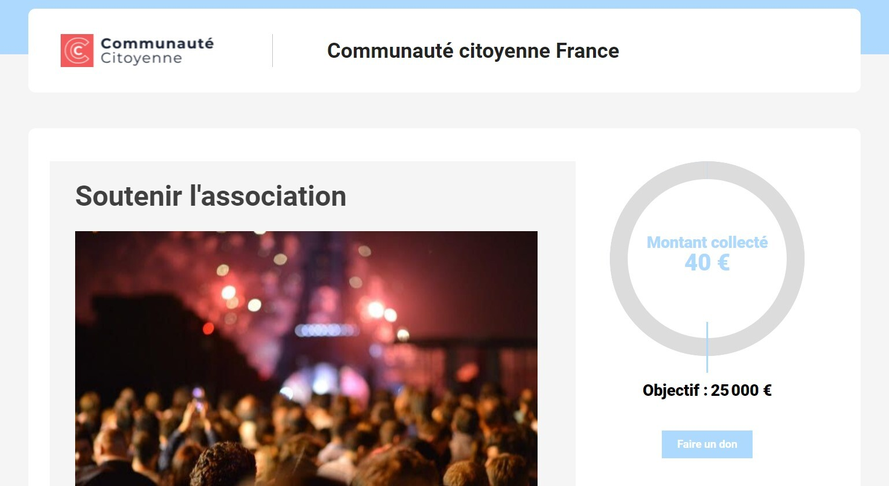

Yapla vous permet de créer une campagne en ligne pour collecter des dons. Découvrez comment :
- présenter et personnaliser votre collecte de fonds,
- définir les montants possibles des dons,
- et promouvoir votre projet auprès de votre communauté.
Les prérequis pour créer une campagne de dons en ligne Yapla
La fonctionnalité de collecte de fonds est disponible avec tous les forfaits, même avec la version gratuite.
⚠️ Important : notez bien le nom de votre organisation et vérifiez qu’elle ne contient aucune erreur. C’est ce nom qui s’affichera sur l’écran des utilisateurs, dans le cadre de votre collecte.
Étape 1 : Créer une campagne de dons
Maintenant que vous avez un compte Yapla, commencez par vous y connecter.
Sur la page de votre Tableau de bord, un encadré intitulé Actions rapides vous donne la possibilité de Créer une campagne de dons.

Cliquez sur le bouton Créer une campagne de dons.
Vous allez pouvoir débuter votre Parcours de création de campagne.
Notre conseil : bien que le parcours soit rapide, consacrez-y le temps nécessaire pour bien le peaufiner.
La première page de la création d’une campagne vous invite à indiquer le nom de votre campagne. Celui-ci s’affichera publiquement sur votre site web. Choisissez un nom évocateur, afin de bien informer vos visiteurs.
Ensuite, fixez votre objectif : quelle somme voulez-vous amasser? Pour mesurer la progression des dons, vous pouvez même décider d’afficher une jauge sur votre page.
Intégrez une image, afin que votre communauté puisse identifier facilement votre campagne.
Enfin, personnalisez sa description. Vous pouvez, par exemple, expliquer pourquoi vous lancez cette campagne, pourquoi cette cause vous tient à cœur, et ce que les dons permettront d’accomplir.
Lorsque vous finalisez cette première étape, une fenêtre s’affiche, vous indiquant que votre campagne est en cours de création.

Étape 2 : Configurer la campagne avec la sélection des dons
La nouvelle page qui s’affiche vous invite à sélectionner les types de dons que votre communauté pourra vous faire.
Cela inclut :
- les sommes qui peuvent être offertes : des paliers fixes, ou des sommes libres,
- la fréquence des dons : un don unique, des dons récurrents, et les dates de prélèvement.
Par défaut, le formulaire autorise les dons uniques et récurrents. Vous pouvez décider de conserver cette option, ou bien de choisir celle qui vous convient le mieux.
Cliquez sur Suivant une fois que vos montants et la récurrence des versements sont fixés.
Étape 3 : Personnaliser le formulaire de la campagne de dons
À cette étape, votre campagne est créée, mais il vous reste à décider quelles informations vos donateurs doivent entrer pour finaliser leur don.

Déterminez les coordonnées que le donateur devra entrer afin de finaliser son don. Ces informations vous seront utiles à des fins de communication, mais elles peuvent aussi servir dans un cadre marketing.
Des champs d’information sont disponibles dans le formulaire par défaut. Vous pouvez les voir dans la fenêtre Informations du donateur. Si vous désirez en ajouter, il vous suffit de cliquer-déposer l’un des Champs disponibles de la colonne de gauche, vers la fenêtre de droite.
Vous pouvez également ajouter un champ d’information personnalisé. Pour ce faire, dans la colonne Champs disponibles, cliquez sur le bouton Créer un nouveau un champ.
Une nouvelle page s’affiche, dans laquelle vous pouvez déterminer le champ à ajouter à votre formulaire de renseignements. Ici, vous pouvez en savoir plus sur le profil de vos donateurs. Par exemple, vous pouvez leur demander la raison qui les amène à participer à votre levée de fonds. Créez votre champ en lui donnant un nom, et ajoutez-y une description qui permet aux visiteurs de comprendre le but de votre question.
Une fois vos modifications apportées, cliquez sur Enregistrer en bas de page.
De retour sur la page de la structure du formulaire, vous pourrez ajouter votre nouveau champ dans la section Informations du donateur, ou bien, vous pouvez cliquer sur le bandeau jaune en bas du formulaire, Ajouter une section.
Cliquez sur Suivant.
Étape 4 : Personnaliser la page web de votre collecte de dons
La page web de votre collecte est une page générée par Yapla, qui peut être ensuite intégrée à votre site. Elle a pour but d’augmenter la visibilité de votre campagne, car vous pourrez la partager avec vos contacts une fois qu’elle sera finalisée.
Veuillez noter que si vous avez déjà créé votre site avec Yapla, cette étape n’est pas nécessaire. La page de collecte de dons que vous créez est automatiquement ajustée pour correspondre à l’esthétique de votre site.

Cette étape vous donne l’occasion de personnaliser cette page, en :
- choisissant ses couleurs : utilisez les couleurs de votre image de marque, par exemple
- intégrant votre logo
- choisissant la police du texte, pour qu’elle soit cohérente avec le reste de votre site.
Cliquez sur Suivant après avoir entré toutes vos modifications.
Étape 5 : Publier la campagne de dons pour la promouvoir
Votre campagne est prête, il ne reste plus qu’à la diffuser!
La page de collecte qui vient d’être créée comporte :
- le nom de votre campagne,
- le logo et le nom de votre association,
- ainsi qu’une jauge qui permet de visualiser votre objectif, et le chemin à parcourir pour l’atteindre.

À ce stade, vous devez faire parler de votre campagne. Vous avez donc l’option de :
- partager le lien de la page de collecte de don; vous pouvez, par exemple, créer une newsletter et l’envoyer à tous vos contacts, puis planifier des rappels à mesure que votre cagnotte augmente
- partager votre campagne de don sur vos médias sociaux : vous avez plus de chances d’atteindre votre objectif en planifiant un calendrier éditorial, dévoilant les sommes atteintes et ce que cela permettra à votre association d’accomplir. Entretenez le sentiment de satisfaction de votre communauté pour l’encourager à donner!
- intégrer la page générée par Yapla, sur votre site web. Ainsi, des visiteurs qui entendent parler de votre association et qui veulent en savoir plus seront également informés de votre collecte en visitant votre site.

Les autres paramètres de votre campagne de dons
Votre campagne de dons est maintenant lancée, mais le Tableau de bord de votre compte Yapla vous offre encore d’autres possibilités.

Pour y accéder, connectez-vous à votre compte, puis rendez vous dans le menu Dons, dans la barre située à gauche de votre écran.
À cet endroit, vous pourrez revoir vos informations au sujet de vos campagnes et des donateurs. Vous pouvez ainsi y visualiser les dons accumulés, modifier la page web de votre campagne ou les informations du formulaire de don.
Les paramètres de votre campagne vous permettent en plus de créer des reçus fiscaux, afin que les donateurs soient exemptés d’impôts sur leurs dons. Cette fonctionnalité vous permet même de créer des reçus consolidés pour vos donateurs réguliers. Consultez notre guide pour la création de reçus fiscaux à ce sujet.
Enfin, vous pouvez y intégrer vos Termes et conditions, afin que les donateurs disposent d’un cadre légal. Découvrez comment faire dans notre section d’aide sur l’activation de vos termes et conditions.

Commentaires
Vous devez vous connecter pour laisser un commentaire.